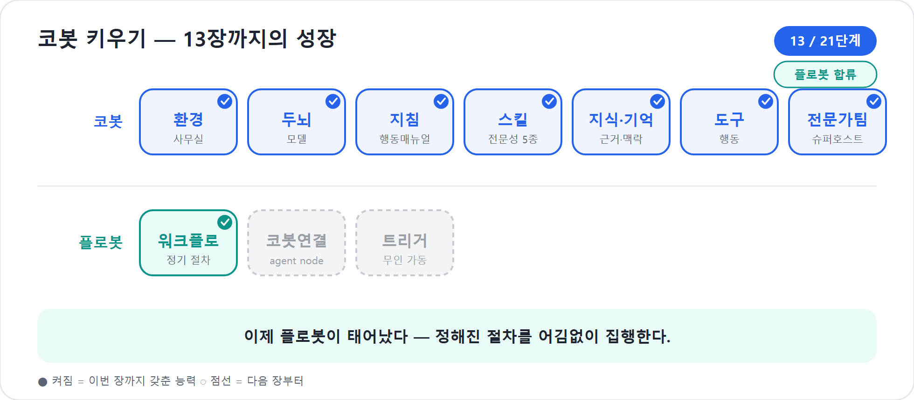

13장. 플로봇의 무대 — Workflows로 절차를 자동화한다
3부까지 코봇은 제법 든든한 신입이 되었다. 9장에서 일하는 법을 Skill로 익혔고, 10장에서 회사 자료와 기억을 붙였고, 11장에서 실제 행동을 하는 도구를 달았다. 12장에서는 혼자 다 하려는 신입을 넘어, 전문가 에이전트를 부르는 슈퍼호스트의 자리까지 보았다. 이제 코봇은 묻고, 판단하고, 정리하고, 다른 동료에게 일을 나눌 줄 안다.
하지만 회사 일이 모두 판단으로 되어 있지는 않다. 어떤 일은 창의보다 반복이 중요하다. 매주 같은 시각에 보고서를 모으고, 정해진 결재선으로 보내고, 승인되면 팀 채널에 게시하고, 실패하면 담당자에게 알리는 일. 이런 절차는 매번 새롭게 생각하면 오히려 위험하다. 어제와 오늘이 같아야 믿을 수 있다. 이 장에서 무대에 오르는 플로봇은 바로 그런 일을 맡는 동료다. 플로봇은 2026년 기준 Copilot Studio의 새 Workflows(공개 미리보기)다. 옛 agent flows가 아니다.
2026년 기준 주의
이 장은 Microsoft Copilot Studio의 새 에이전트 경험과 새 Workflows 공개 미리보기를 기준으로 쓴다. 미리보기 기능은 화면 이름과 세부 동작이 바뀔 수 있다. 이 책에서 플로봇이라고 부르는 것은 새 Workflows이며, 옛 agent flows는 필요할 때만 classic workflows로 구분해 설명한다.
생각하는 동료와 어김없는 동료
1부와 3장에서 우리는 두 갈래 길을 나누었다. 코봇은 생각하는 동료다 — 모호한 요청을 읽고, 맥락을 추론하고, 가장 그럴듯한 다음 행동을 고른다. 플로봇은 반대편에 선다. 생각보다 어김없음으로 평가받는 동료다. 컨베이어벨트 위에 부품이 올라오면 같은 공정을 지나 같은 완성품이 나오듯, 같은 입력에는 같은 규칙 경로를 따라 같은 출력을 낸다. 제품 문서가 결정론적(deterministic)이라 부르는 성질이다.
결정론은 차갑고 답답해 보이지만, 회사의 많은 절차는 바로 그 차가움 때문에 안전하다. 비용 승인, 개인정보 처리, 고객 환불, 계약 검토, 주간 보고 발송 같은 일은 “이번에는 감으로 다르게 해보자”가 통하지 않는다. 규칙대로 도는 설비가 필요하다. 9장에서 남겨 둔 복선, 곧 결정적 절차는 플로봇에게 맡긴다는 원칙이 여기서 회수된다. 코봇이냐 플로봇이냐를 고르는 문제가 아니라 “판단은 코봇, 절차는 플로봇”이라는 분업을 세우는 문제다. 둘을 가르는 다섯 질문과 안티패턴은 3장에서 이미 충분히 다뤘으니, 이 장은 곧장 플로봇의 무대로 내려간다. 13장에서 무대를 이해하고, 14장에서 둘을 한 흐름으로 엮고, 15장에서 사람이 깨우지 않아도 스스로 출근하게 만든다.
코봇 한마디
"저는 애매한 목표를 읽고 판단하는 쪽에 강해요. 하지만 승인선처럼 매번 같아야 안전한 절차는 플로봇에게 맡길 때 일이 더 믿음직해집니다!"
여기에 한 가지 원칙을 더 새겨 두면 좋다. 가장 단순한 해법에서 출발하라. 어떤 단계가 규칙으로 또렷이 적힌다면 굳이 코봇에게 매번 판단을 시킬 필요가 없다. 결정론적 절차는 싸고 빠르고 어김없다. 반대로 코봇의 판단은 유연하지만, 매번 모델을 깨워 생각하게 하는 만큼 더 느리고 더 비싸다. 그러니 “이 단계가 정말 판단이 필요한가, 아니면 규칙으로 충분한가”를 먼저 묻고, 판단이 꼭 필요한 곳에만 코봇을 부른다. 똑똑함을 아끼는 것이 곧 비용과 신뢰성을 함께 챙기는 길이다.
Agent flows와 Workflows를 헷갈리지 말자
Copilot Studio의 자동화 화면을 보면 이름이 비슷해 혼란스럽다.
Microsoft Learn의 flows-overview 문서는 agent
flows와 workflows를 함께 설명한다. 둘 다 반복 작업을 자동화하고
앱과 서비스를 통합한다. 둘 다 Workflows 페이지에서 만들고 볼 수 있다.
하지만 이 책의 범위에서는 구분이 매우 중요하다.
새 Workflows는 공개 미리보기로 소개된 새 자동화 경험이다. 재설계된 비주얼 캔버스, 네이티브 AI 액션, 에이전트 핸드오프, 노드 단위 테스트를 앞세운다. 반면 기존 agent flows는 이전 자동화 경험이다. 이 책에서는 혼동을 피하려고 옛 agent flows를 classic workflows라고 부른다.
| 구분 | 새 Workflows(이 책의 플로봇) | 옛 agent flows(classic workflows) |
|---|---|---|
| 상태 | 공개 미리보기 | 기존 자동화 경험으로 계속 제공 |
| 만드는 곳 | Copilot Studio의 Workflows 페이지 | 같은 Workflows 페이지에서 생성·조회 가능 |
| 디자이너 | 재설계된 비주얼 캔버스 | 기존 디자이너 |
| 핵심 강점 | 통합 캔버스, 노드 단위 테스트, agent node, M365 Copilot node, Classify·Extract | 기존 Power Automate식 자동화 자산과 친숙한 흐름 |
| 관계 | 새로 만들 자동화의 기준 | 기존 자산 유지·전환 검토 대상 |
| 전환 | Workflows 페이지에서 함께 보이며, 기존 agent flow 자산은 새 Workflows로 convert할 수 있는 흐름이 제공된다. 미리보기이므로 조건은 현재 제품 안내를 확인한다 | 기존 흐름은 유지 가능하다. 별도로 Power Automate cloud flow를 agent flow로 바꾸는 일방향 전환도 문서화되어 있다 |
함정
플로봇을 agent flow와 등치하면 이 책의 범위 락을 깨뜨린다. 플로봇은 새 Workflows다. 옛 agent flows는 여전히 유용한 자동화 자산일 수 있지만, 새 Workflows와 같은 말이 아니다.
공식 문서가 덧붙이는 현실적 문장도 기억하자. Workflows는 미리보기이며, 미리보기 기능은 프로덕션 용도가 아닐 수 있고 기능 제한이 있을 수 있다. 그래서 이 책은 Workflows의 방향과 설계 원리를 배우되, 실제 운영 투입은 6부의 게시·모니터·거버넌스 기준으로 다시 확인한다.
Workflows 페이지에서 시작한다
새 Workflows의 출발점은 Copilot Studio의 Workflows 페이지다. 공식 Learn 문서 기준으로 이 페이지에서 새 워크플로를 만들 수 있고, 기존 agent flow도 함께 볼 수 있다. 만들기는 크게 두 갈래다.
- 디자이너에서 만들기: 새 Workflow를 선택하고 비주얼 캔버스에서 트리거와 액션을 놓는다.
- 자연어로 만들기: “언제 X가 일어나면 Y를 해줘”라고 설명해 자동화 초안을 만든다. 단, 2026년 6월 기준 Learn 문서는 자연어 작성이 agent flow에는 제공되지만, 새 Workflows는 디자이너로 만든다고 안내한다.
입문 독자에게는 디자이너 접근이 더 좋다. 플로봇은 결국 절차
설비이므로, 화면에서 “무엇이 먼저, 무엇이 다음”인지 보면서 익히는 편이
빠르다. 공개 데모들도 같은 흐름을 보여 준다. 새 워크플로를 열면 첫
노드는 보통 Start, 즉 트리거다. 그 뒤에
Add a step으로 단계가 붙는다. 각 카드를 클릭하면 오른쪽
구성 패널이 열리고, 입력값·표현식·동적 콘텐츠를 설정한다.
새 캔버스의 인상은 기존 Power Automate를 써본 사람에게는 익숙하면서도 다르다. 노드를 드래그해 옮기고, 연결선을 다시 잇고, 확대·축소하고, 전체 보기로 맞추고, Tidy up으로 얽힌 가지를 정리한다. 가로 흐름이 불편하면 세로 레이아웃으로 바꿀 수 있다. 길어진 컨베이어벨트를 책상 위에서 다시 정돈하는 느낌이다.
팁
긴 워크플로를 만들 때는 처음부터 예쁘게 배치하려고 애쓰지 말자. 먼저 절차가 맞는지 세우고, 마지막에Tidy up과 레이아웃 전환으로 읽기 쉽게 정리한다. 설비의 미관보다 먼저 중요한 것은 입력·분기·출력의 정확성이다.
플로봇 한마디
"저는 모양보다 순서가 먼저예요. 입력 → 분기 → 출력이 정확히 맞물리는지부터 세우고, 보기 좋게 정리하는 건 맨 마지막에 합니다!"
Add 팔레트는 설비 창고다
Workflows 캔버스에서 Add 패널은 설비 창고다. 여기서
트리거 뒤에 붙일 블록을 고른다. 공식 문서는 액션을 AI 기능, 사람 개입,
기본 도구, 커넥터로 크게 나눈다. 공개 데모에서는 이 블록들이 한 캔버스에
나란히 등장한다.
| 블록 | 하는 일 | 플로봇 비유 |
|---|---|---|
| Agent node | 워크플로 중간에서 Copilot Studio 에이전트를 호출하거나, 필요한 유연한 판단을 맡긴다 | 라인 옆 전문가 작업대 |
| M365 Copilot node | Microsoft 365 Copilot, Researcher, Analyst, 커스텀 M365 에이전트를 호출한다 | 회사 자료실과 연결된 조사 담당 |
| Classify | 텍스트나 입력을 정의한 범주로 분류한다 | 물건을 행선지별로 나누는 분류기 |
| Extract | 문서·메일 등에서 필요한 값을 뽑아 구조화한다 | 서류에서 이름·금액·날짜를 읽는 스캐너 |
| Human review | 사람 승인·확인·입력을 기다린다 | 라인 중간의 검수대 |
| Connector | Outlook, Teams, SharePoint, Dataverse, 외부 서비스와 연결한다 | 사내 시스템으로 뻗은 컨베이어 출구 |
| Function / Variable | 값을 계산하거나 저장한다 | 라벨 붙이기, 임시 보관함 |
| If/Else / Loop | 조건 분기와 반복을 만든다 | 갈림길과 반복 공정 |
| Note | 캔버스에 설명을 남긴다 | 설비 옆 포스트잇 |
여기서 조심할 점이 있다. 클래식이나 이전 Power Platform 경험에 익숙한 독자는 “AI 프롬프트 액션을 하나 넣으면 되겠네”라고 생각할 수 있다. 그러나 이 책의 신버전 기준에서는 워크플로의 유연한 AI 판단은 agent node가 맡는 것으로 설명한다. 에이전트 쪽의 재사용 업무 매뉴얼은 9장의 Skill이고, 워크플로 안에서 유연성이 필요한 지점은 agent node로 넘긴다. 옛 프롬프트 기능을 현재 신버전의 핵심 기능처럼 설명하지 않는다.
노드 단위 테스트 — 설비 한 칸씩 시운전하기
새 Workflows에서 가장 입문자 친화적인 변화 중 하나는 inline node testing(한 단계만 따로 시험), 곧 노드 단위 테스트다. 예전에는 긴 자동화를 끝까지 돌려야 중간 한 단계가 맞는지 알 수 있는 경우가 많았다. 새 디자이너는 각 노드의 Test 탭에서 해당 단계만 따로 실행해 볼 수 있다.
공식 flow-designer 문서는 테스트를 두 종류로 나눈다.
| 확인하려는 것 | 테스트 방식 | 의미 |
|---|---|---|
| 단일 액션·AI 단계 | Test this node | 이 노드만 고립 실행한다. 필요한 upstream 값을 직접 넣거나 이전 실행에서 불러온다. |
| 전체 흐름 | Run flow test | 트리거부터 끝까지 실제 런타임으로 실행한다. |
노드 테스트는 플로봇을 만드는 방식 자체를 바꾼다. 예를 들어 Classify
노드가 고객 메일을 billing, technical,
sales로 잘 나누는지 확인하고 싶다면, 메일 수신 트리거부터
답장 발송까지 전부 돌릴 필요가 없다. Classify 노드를 열고 샘플 제목과
본문을 넣어 Test를 누르면 된다. 이전 실행이 있다면 최근 실행의 값을
불러와 같은 상황을 재현할 수도 있다.
현장에서
자동화 실패의 상당수는 “큰 흐름 전체”가 아니라 “작은 노드 하나의 입력 모양”에서 시작된다. 날짜가 문자열인지 날짜 형식인지, 금액에 원화 기호가 붙어 있는지, 분류 결과가고위험인지High인지가 다음 단계를 흔든다. 노드 단위 테스트는 이런 작은 균열을 초기에 잡아 준다.
전체 테스트는 다른 목적이다. 수동 트리거라면 입력 대화상자가 열리고,
일정 트리거라면 첫 실행이 시작되거나 설치된 일정에 맞춰 작동한다. 커넥터
이벤트라면 워크플로가 “Waiting for trigger…” 상태로 기다리다가 실제 메일
도착 같은 사건을 받아 실행된다. 실행 중에는 Activity 패널에서
Running, Waiting, Succeeded,
Failed, Canceled 같은 상태를 확인하고 각
단계의 입력과 출력을 들여다본다.
"긴 자동화를 한 번에 믿으려 하지 마세요. 플로봇의 한 칸씩 시운전하면, 제가 판단을 넘겨받기 전후의 입력도 훨씬 안정적으로 맞출 수 있어요!"
버전 기록과 분석 — 설비의 이력과 계기판
플로봇은 한 번 만들고 끝나는 설비가 아니다. 업무 규정이 바뀌고, 결재선이 바뀌고, Teams 채널이 바뀐다. 그래서 새 Workflows의 중요한 축이 version history와 analytics다.
공식 디자이너 문서는 저장된 버전을 바탕으로 흐름의 이력을 볼 수 있다고 설명한다. 공개 데모에서는 이전 버전을 미리 보고, 현재 버전과 비교하고, 필요하면 복원하는 장면이 나온다. 입문자에게 이 기능은 단순한 편의가 아니다. 자동화는 눈에 보이지 않는 손이기 때문에, “언제 누가 무엇을 바꿨는가”를 남기지 않으면 운영 중 사고를 추적하기 어렵다.
분석은 계기판이다. Workflows 페이지와 Activity 탭에서 실행 이력, 성공·실패, 실행 추세, 액션 수행 내역을 본다. 어떤 노드에서 자주 실패하는지, 승인 대기에서 오래 멈추는지, 특정 커넥터가 병목인지 확인한다. 6부의 Monitor와 거버넌스에서 더 깊이 다루겠지만, 13장에서 기억할 원칙은 하나다.
플로봇은 “만드는 화면”과 “돌아간 뒤 들여다보는 화면”이 함께 있어야 믿을 수 있다.
자동화의 신뢰는 실행 성공률에서만 나오지 않는다. 실패했을 때 어디서 왜 멈췄는지 설명할 수 있어야 한다. 그래서 노드 테스트, Activity, version history, analytics는 한 묶음으로 이해해야 한다. 설비를 만들고, 한 칸씩 시운전하고, 전체 가동을 보고, 변경 이력을 남기는 루프다.
러닝 예제 — 금요일의 보고 라인
우리의 러닝 예제는 프로젝트 운영이다. 9장에서 코봇은
reporter Skill로 상태보고서 초안을 만들 줄 알게 되었다.
11장에서 도구를 달아 Teams나 SharePoint 같은 시스템에 행동할 수 있는
손발도 얻었다. 이제 그 산출물을 정해진 절차로 옮기는 일을 플로봇에게
맡겨 보자.
예제 이름은 금요일의 보고 라인이다.
Manual 또는 Schedule trigger
→ 보고서 입력 확인
→ Human review: 팀장 검토
→ If approved
→ Teams 채널 게시
→ SharePoint 보고 폴더 저장
→ 담당자에게 완료 알림
Else
→ 작성자에게 수정 요청
→ Activity에 실패/반려 기록13장에서는 우선 수동으로 시작한다. 15장에서 일정 트리거를 달아 매주 금요일 오후 4시에 스스로 돌게 만들 것이다. 처음부터 자동으로 열어 두면 문제를 찾기 어렵다. 수동 트리거로 입력과 분기를 다듬고, 노드 테스트로 각 단계를 확인한 뒤, 마지막에 일정 트리거를 붙이는 편이 안전하다.
구체적으로는 이렇게 만든다.
- Workflows 페이지에서 New workflow를 선택한다.
- Start 노드는 우선 Manual로 둔다. 입력은
reportTitle,reportBody,projectName정도로 잡는다. - Human review 노드를 넣어 팀장에게 보고서 검토를 요청한다.
- 승인 결과를
approved값으로 받는다. - If/Else로
approved = yes와 그렇지 않은 경우를 나눈다. - 승인되면 Teams 커넥터로 프로젝트 채널에 게시하고, SharePoint 커넥터로 보고 폴더에 저장한다.
- 반려되면 작성자에게 수정 요청을 보낸다.
- 각 노드를 Test 탭에서 따로 실행해 본 뒤, 전체 Run flow test를 돌린다.
이 절차에는 판단이 거의 없다. 어디에 올릴지, 누가 승인할지, 반려되면 누구에게 보낼지가 정해져 있다. 그래서 코봇이 매번 자유롭게 처리하면 오히려 불안하다. 코봇은 보고서 초안을 잘 쓴다. 그러나 승인 라우팅과 게시 절차는 플로봇이 더 잘한다.
작은 사례
한 프로젝트 PMO가 매주 보고서를 수동으로 취합했다. 담당자는 매번 “이번 주 채널이 어디였지?”, “팀장 승인 메일을 보냈나?”를 확인했다. 플로봇으로 보고 라인을 만들자 보고서 작성 자체는 코봇이 돕고, 승인·게시·저장은 Workflows가 맡았다. 달라진 것은 속도만이 아니었다. 누가 승인했고 어디에 게시됐는지가 Activity에 남아, 월말 감사 대응이 쉬워졌다.
Human review는 브레이크가 아니라 안전장치다
자동화 입문자가 가장 먼저 빼고 싶어 하는 노드가 Human review다. “자동화인데 왜 사람을 기다리나요?”라는 질문이 나온다. 그러나 현장에서는 반대다. 돈, 고객, 인사, 법무, 개인정보가 얽힌 흐름일수록 사람 검토가 자동화의 적이 아니라 조건이다.
Human review는 컨베이어벨트 중간의 검수대다. 설비가 멈추는 것처럼 보이지만, 실제로는 다음 사고를 막는다. 보고서 게시처럼 되돌릴 수 있는 일은 자동으로 넘어갈 수 있다. 그러나 고객 환불, 계약 발송, 민감 정보 공유, 대외 공지처럼 되돌리기 어려운 일은 사람이 한 번 봐야 한다.
| 자동으로 넘겨도 되는 일 | Human review를 두는 편이 안전한 일 |
|---|---|
| 내부 채널의 초안 알림 | 임원·고객에게 보내는 최종 메일 |
| 테스트 SharePoint 목록 등록 | 실제 비용·환불·결재 처리 |
| 낮은 위험도의 상태 알림 | 개인정보·계약·법무 관련 처리 |
| 실패 시 재시도 가능한 작업 | 한 번 실행하면 되돌리기 어려운 작업 |
Human review를 잘 쓰는 요령은 검토자에게 충분한 맥락을 주는 것이다. “승인하시겠습니까?”만 보내면 사람은 원래 시스템으로 돌아가 확인해야 한다. 반대로 보고서 제목, 핵심 변경점, 금액, 영향 범위, 승인/반려 선택지를 함께 주면 검토가 빠르고 안전해진다.
"사람 검토는 제가 일을 못해서 넣는 브레이크가 아니에요. 되돌리기 어려운 결정 앞에서 사수님이 마지막 책임 있는 판단을 해 주는 안전장치입니다!"
플로봇 설계의 첫 체크리스트
13장에서는 기능 이름을 많이 배웠지만, 실제 설계는 단순한 질문에서 시작한다.
- 입력은 무엇인가? 수동 입력인지, 메일인지, SharePoint 항목인지, 에이전트 호출인지 정한다.
- 항상 같은 순서가 필요한가? 순서가 흔들려도 되면 Skill이나 코봇 판단이 나을 수 있다.
- 중간에 사람이 봐야 하는가? 비용·고객·개인정보·외부 발송이면 Human review 후보로 본다.
- 분기는 몇 개인가? 승인/반려, 고위험/저위험, 청구/기술/영업처럼 분류 기준을 먼저 쓴다.
- 출력은 어디로 가는가? Teams, Outlook, SharePoint, Dataverse, 외부 시스템을 명확히 한다.
- 어디서 테스트할 것인가? 노드 단위 테스트와 전체 테스트를 나눈다.
- 운영 중 무엇을 볼 것인가? Activity, analytics, version history에서 봐야 할 지표를 정한다.
이 체크리스트를 통과하면 플로봇의 뼈대가 선다. 다음 장에서는 이 뼈대 위에 코봇을 다시 올린다. 절차가 흐르다가 판단이 필요한 지점에서 코봇을 부르고, 코봇이 필요할 때 워크플로를 도구처럼 부르는 양방향 구조다.
"체크리스트 일곱 칸은 하나라도 비우면 안 돼요. 트리거·입력·분기·출력·테스트·관찰까지 빠짐없이 채워야 저는 같은 길을 매번 똑같이 돌 수 있습니다!"
핵심 정리
| # | 요점 |
|---|---|
| 1 | 플로봇은 2026년 기준 새 Workflows다. 옛 agent flows가 아니며, 옛 agent flows는 classic workflows로 구분한다. |
| 2 | Workflows의 가치는 결정론이다. 같은 입력이면 같은 규칙 경로와 출력이 나와야 하는 절차에 쓴다. |
| 3 | 새 Workflows는 공개 미리보기이며, 재설계 비주얼 캔버스·노드 단위 테스트·version history·analytics·agent node·intelligent actions가 핵심이다. |
| 4 | Add 패널에는 Agent, M365 Copilot, Classify, Extract, Human review, Connector, Variable, If/Else, Loop 같은 블록이 모인다. |
| 5 | 노드 단위 테스트는 설비 한 칸씩 시운전하는 기능이다. 전체 실행 전에 입력·출력 모양을 잡는 데 중요하다. |
| 6 | Human review는 자동화의 브레이크가 아니라 안전장치다. 되돌리기 어려운 길목에 검수대를 둔다. |
| 7 | 9장의 Skill은 일하는 법을 가르치고, 11장의 Tool은 행동을 수행하며, 13장의 Workflows는 정해진 절차를 어김없이 엮는다. |
자주 묻는 질문(FAQ)
| 질문 | 답변 |
|---|---|
| Workflows와 Skill은 무엇이 다른가? | Skill은 코봇이 특정 업무를 어떻게 판단하고 작성할지 배우는 매뉴얼이다. Workflows는 정해진 절차를 실행하는 설비다. |
| 새 Workflows와 옛 agent flows는 같은가? | 아니다. 둘 다 Workflows 페이지에서 볼 수 있지만, 새 Workflows는 공개 미리보기의 재설계 자동화 경험이고 옛 agent flows는 classic workflows로 구분한다. |
| 노드 단위 테스트가 왜 중요한가? | 긴 흐름 전체를 돌리지 않고도 한 단계의 입력·출력을 확인할 수 있다. 특히 Classify, Extract, 커넥터 입력값을 다듬을 때 유용하다. |
| 워크플로 안에서 AI 판단은 무엇이 맡나? | 이 책의 신버전 기준에서는 agent node가 맡는다. 유연한 판단이 필요한 구간만 에이전트에 넘기고, 나머지는 결정적 절차로 둔다. |
| Human review를 빼면 더 자동화되지 않나? | 더 빨라질 수는 있지만 더 위험해질 수 있다. 비용·고객·개인정보·외부 발송처럼 되돌리기 어려운 작업 앞에는 사람 검토가 안전하다. |
| Workflows 실행에는 비용이 드나? | 공식 문서 기준으로 agent flow나 workflow가 실행하는 각 액션은 Copilot Studio 용량을 소비한다. 테스트 실행은 예외가 있을 수 있으나 운영 비용은 6부에서 다시 다룬다. |
다음 장에서는
이 장에서 플로봇의 무대와 설비를 보았다. 이제 절차만으로는 부족한 순간을 다룰 차례다. 14장에서는 워크플로 안에 코봇을 세우는 agent node, 코봇이 워크플로를 tool로 부르는 구조, M365 Copilot node와 Classify·Extract를 이용한 분기를 살핀다. 3장에서 갈라졌던 판단의 길과 절차의 길이 마침내 한 컨베이어벨트 위에서 만난다.
실습 — 코봇 키우기 13단계: 플로봇이 태어난다

〔이어받기〕 12장의 팀장 코봇(과 전문가 팀). 그러나 지금까지 모든 산출물은 사람이 “해줘” 해야 돌았다. 어김없이 반복되는 절차를 맡을 동료를 부른다.
12-a. 첫 플로봇 워크플로를 짠다. “매주 금요일, 코봇이 만든 상태보고서를 → 정해진 결재선으로 보내고 → 승인되면 팀 채널에 게시”를 Add 팔레트로 구성한다.
12-b. 통제점을 둔다. If/Else로 미승인 시 리마인드, Human review로 팀장 승인 단계를 삽입한다.
12-c. 수동 실행으로 확인한다. (아직 트리거 없이) 워크플로를 손으로 돌려 결재 요청→승인→게시가 순서대로 도는지 본다.
〔성장〕 플로봇이 태어났다 — 정해진 절차를 어김없이 집행하는 자동 라인 동료. 코봇에겐 절차를 넘길 파트너가 생겼다. 〔검증 포인트〕 수동 실행 시 Human review에서 멈춰 승인을 기다리고, 승인 후 채널 게시까지 도달하면 통과.